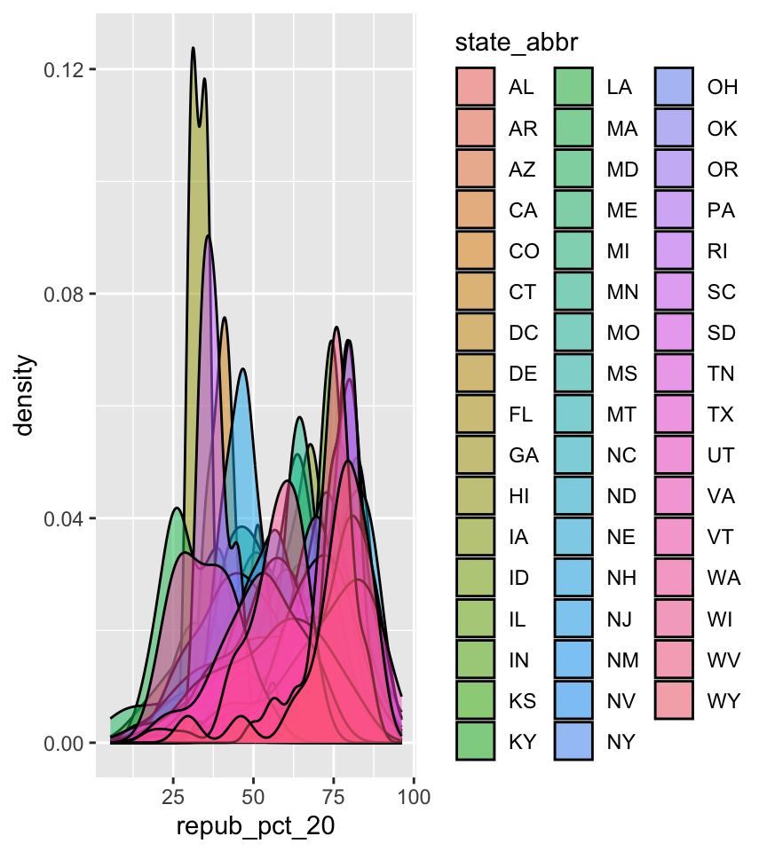
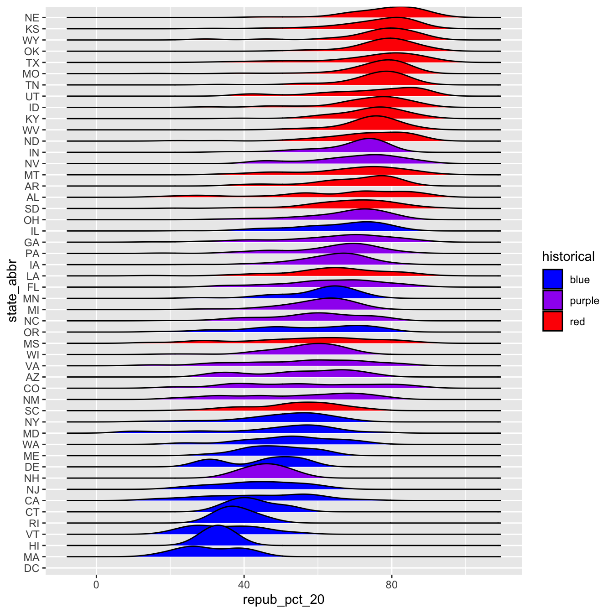
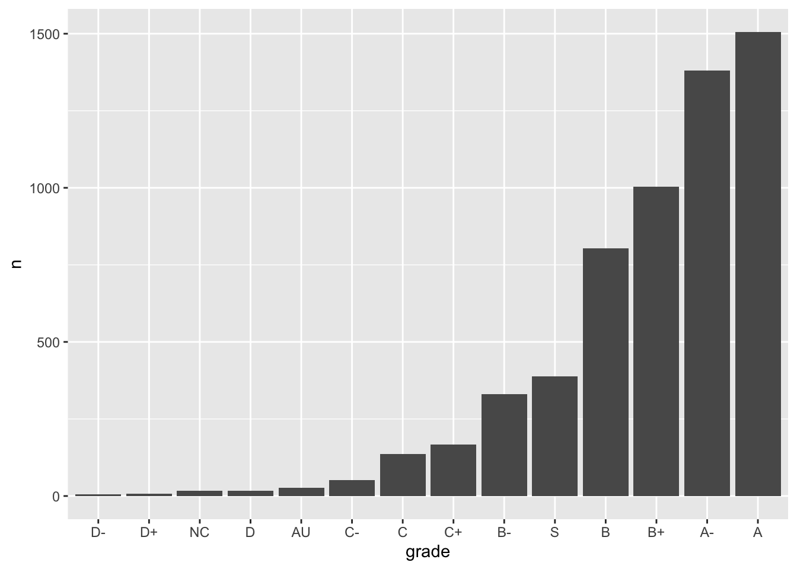

subset the data to only filter() the rows and select() the columns of interest
mutate() existing variables and define new variables
summarize() various aspects of a variable, both overall and by group (group_by())
reshape our data to fit the task at hand (pivot_longer(), pivot_wider())
join() different datasets into one
15.2 Factors
In the remaining days of our data preparation unit, we’ll focus on working with special types of “categorical” variables: characters and factors. Variables with these structures often require special tools and considerations.
We’ll focus on two common considerations:
Regular expressions
When working with character strings, we might want to detect, replace, or extract certain patterns. For example, recall our data on courses:
Focusing on just the sem character variable, we might want to…
change FA to fall_ and SP to spring_
keep only courses taught in fall
split the variable into 2 new variables: semester (FA or SP) and year
Converting characters to factors (and factors to meaningful factors) (today)
When categorical information is stored as a character variable, the categories of interest might not be labeled or ordered in a meaningful way. We can fix that!
Example 1: Default Order
Recall our data on presidential election outcomes in each U.S. county (except those in Alaska):
state_abbr historical county_name total_votes_20 repub_pct_20 dem_pct_20
1 AL red Autauga County 27770 71.44 27.02
2 AL red Baldwin County 109679 76.17 22.41
3 AL red Barbour County 10518 53.45 45.79
4 AL red Bibb County 9595 78.43 20.70
5 AL red Blount County 27588 89.57 9.57
6 AL red Bullock County 4613 24.84 74.70
dem_support_20
1 low
2 low
3 low
4 low
5 low
6 high
Check out the below visual and numerical summaries of dem_support_20:
low = the Republican won the county by at least 5 percentage points
medium = the Republican and Democrat votes were within 5 percentage points
high = the Democrat won the county by at least 5 percentage points
dem_support_20 n
1 high 458
2 low 2494
3 medium 157
Follow-up:
What don’t you like about these results?
Example 2: Change Order using fct_relevel
The above categories of dem_support_20 are listed alphabetically, which isn’t particularly meaningful here. This is because dem_support_20 is a character variable and R thinks of character strings as words, not category labels with any meaningful order (other than alphabetical):
'data.frame': 3109 obs. of 7 variables:
$ state_abbr : chr "AL" "AL" "AL" "AL" ...
$ historical : chr "red" "red" "red" "red" ...
$ county_name : chr "Autauga County" "Baldwin County" "Barbour County" "Bibb County" ...
$ total_votes_20: int 27770 109679 10518 9595 27588 4613 9488 50983 15284 12301 ...
$ repub_pct_20 : num 71.4 76.2 53.5 78.4 89.6 ...
$ dem_pct_20 : num 27.02 22.41 45.79 20.7 9.57 ...
$ dem_support_20: chr "low" "low" "low" "low" ...
We can fix this by using fct_relevel() to both:
Store dem_support_20 as a factor variable, the levels of which are recognized as specific levels or categories, not just words.
Specify a meaningful order for the levels of the factor variable.
We now have a factor variable, dem_support_20, with categories that are ordered in a meaningful way:
dem_support_20 n
1 low 2494
2 medium 157
3 high 458
But maybe we want to change up the category labels. For demo purposes, let’s create a new factor variable, results_20, that’s the same as dem_support_20 but with different category labels:
results_20 n
1 strong republican 2494
2 close race 157
3 strong democrat 458
Example 4: Re-order Levels using fct_relevel
Finally, let’s explore how the Republican vote varied from county to county within each state:

This is too many density plots to put on top of one another. Let’s spread these out while keeping them in the same frame, hence easier to compare, using a joy plot or ridge plot:
OK, but this is alphabetical. Suppose we want to reorder the states according to their typical Republican support. Recall that we did something similar in Example 2, using fct_relevel() to specify a meaningful order for the dem_support_20 categories:
We could use fct_relevel() to reorder the states here, but what would be the drawbacks?
Example 5: Re-order levels Based on Another Variable using fct_reorder
When a meaningful order for the categories of a factor variable can be defined by another variable in our dataset, we can use fct_reorder(). In our joy plot, let’s reorder the states according to their median Republican support:

Summary
The forcats package, part of the tidyverse, includes handy functions for working with categorical variables (for + cats):
Here are just some, few of which we explored above:
functions for changing the order of factor levels
fct_relevel() = manually reorder levels
fct_reorder() = reorder levels according to values of another variable
fct_infreq() = order levels from highest to lowest frequency
fct_rev() = reverse the current order
functions for changing the labels or values of factor levels
We’ll explore the number of times each grade was assigned:
grade n
1 A 1506
2 A- 1381
3 AU 27
4 B 804
5 B+ 1003
6 B- 330
Exercise 1: Changing Order
Check out a column plot of the number of times each grade was assigned during the study period. This is similar to a bar plot, but where we define the height of a bar according to variable in our dataset.
The order of the grades is goofy! Construct a new column plot, manually reordering the grades from high (A) to low (NC) with “S” and “AU” at the end:
Construct a new column plot, reordering the grades in ascending frequency (i.e. how often the grades were assigned):
Construct a new column plot, reordering the grades in descending frequency (i.e. how often the grades were assigned):
Exercise 2: Changing Factor Level Labels
It may not be clear what “AU” and “S” stand for. Construct a new column plot that renames these levels “Audit” and “Satisfactory”, while keeping the other grade labels the same and in a meaningful order:
15.4 Solutions
Click for Solutions
Example 1: Default Orde
The categories are in alphabetical order, which isn’t meaningful here.
Example 4: Re-ordering Levels using fct_relevel
we would have to:
Calculate the typical Republican support in each state, e.g. using group_by() and summarize().
We’d then have to manually type out a meaningful order for 50 states! That’s a lot of typing and manual bookkeeping.
Exercise 1: Changing Order

Exercise 2: Changing Factor Level Labels
Source Code
---title: "Factors"number-sections: trueexecute: warning: falsefig-env: 'figure'fig-pos: 'h'fig-align: centercode-fold: false---::: {.callout-caution title="Learning Goals"}- Understand the difference between `character` and `factor` variables.- Be able to convert a `character` variable to a `factor`.- Develop comfort in manipulating the order and values of a factor.:::::: {.callout-note title="Additional Resources"}For more information about the topics covered in this chapter, refer to the resources below:- [forcats cheat sheet (pdf)](https://github.com/rstudio/cheatsheets/raw/main/factors.pdf)- [Factors (html)](https://r4ds.hadley.nz/factors) by Wickham & Grolemund:::## Review**Where are we? Data preparation**Thus far, we've learned how to:- do some wrangling: - `arrange()` our data in a meaningful order - subset the data to only `filter()` the rows and `select()` the columns of interest - `mutate()` existing variables and define new variables - `summarize()` various aspects of a variable, both overall and by group (`group_by()`)- reshape our data to fit the task at hand (`pivot_longer()`, `pivot_wider()`)- `join()` different datasets into one## FactorsIn the remaining days of our data preparation unit, we'll focus on working with special types of "categorical" variables: *characters* and *factors*.Variables with these structures often require special tools and considerations.We'll focus on two common considerations:1. **Regular expressions**\ When working with character strings, we might want to detect, replace, or extract certain patterns. For example, recall our data on `courses`:```{r}#| echo: falsecourses <-read.csv("https://mac-stat.github.io/data/courses.csv")# Check out the datahead(courses)# Check out the structure of each variable# Many of these are characters!str(courses)```Focusing on just the `sem` character variable, we might want to...- change `FA` to `fall_` and `SP` to `spring_`- keep only courses taught in fall- split the variable into 2 new variables: `semester` (`FA` or `SP`) and `year`2. **Converting characters to factors (and factors to meaningful factors)** (today)\ When categorical information is stored as a *character* variable, the categories of interest might not be labeled or ordered in a meaningful way. We can fix that!### Example 1: Default Order {.unnumbered}Recall our data on presidential election outcomes in each U.S. county (except those in Alaska):```{r}library(tidyverse)elections <-read.csv("https://mac-stat.github.io/data/election_2020_county.csv") |>select(state_abbr, historical, county_name, total_votes_20, repub_pct_20, dem_pct_20) |>mutate(dem_support_20 =case_when( (repub_pct_20 - dem_pct_20 >=5) ~"low", (repub_pct_20 - dem_pct_20 <=-5) ~"high",.default ="medium" ))# Check it outhead(elections) ```Check out the below visual and numerical summaries of `dem_support_20`:- low = the Republican won the county by at least 5 percentage points- medium = the Republican and Democrat votes were within 5 percentage points- high = the Democrat won the county by at least 5 percentage points```{r}ggplot(elections, aes(x = dem_support_20)) +geom_bar()elections |>count(dem_support_20)```Follow-up:What don't you like about these results?### Example 2: Change Order using `fct_relevel` {.unnumbered}The above categories of `dem_support_20` are listed alphabetically, which isn't particularly meaningful here.This is because `dem_support_20` is a *character* variable and R thinks of character strings as words, not category labels with any meaningful order (other than alphabetical):```{r}str(elections)```We can fix this by using `fct_relevel()` to both:(1) Store `dem_support_20` as a *factor* variable, the levels of which are recognized as specific **levels** or categories, not just words.(2) Specify a meaningful order for the levels of the factor variable.```{r}# Notice that the order of the levels is not alphabetical!elections <- elections |>mutate(dem_support_20 =fct_relevel(dem_support_20, c("low", "medium", "high")))# Notice the new structure of the dem_support_20 variablestr(elections)``````{r}# And plot dem_support_20ggplot(elections, aes(x = dem_support_20)) +geom_bar()```### Example 3: Change Labels using `fct_recode` {.unnumbered}We now have a *factor* variable, `dem_support_20`, with categories that are ordered in a meaningful way:```{r}elections |>count(dem_support_20)```But maybe we want to change up the category *labels*.For demo purposes, let's create a *new* factor variable, `results_20`, that's the same as `dem_support_20` but with different category labels:```{r}# We can redefine any number of the category labels.# Here we'll relabel all 3 categories:elections <- elections |>mutate(results_20 =fct_recode(dem_support_20, "strong republican"="low","close race"="medium","strong democrat"="high"))# Check it out# Note that the new category labels are still in a meaningful,# not necessarily alphabetical, order!elections |>count(results_20)```### Example 4: Re-order Levels using `fct_relevel` {.unnumbered}Finally, let's explore how the Republican vote varied from county to county within each state:```{r fig.width = 4.5}# Note that we're just piping the data into ggplot instead of writing# it as the first argumentelections |> ggplot(aes(x = repub_pct_20, fill = state_abbr)) + geom_density(alpha = 0.5)```This is too many density plots to put on top of one another.Let's spread these out while keeping them in the same frame, hence easier to compare, using a **joy plot** or **ridge plot**:```{r fig.height = 7}library(ggridges)elections |> ggplot(aes(x = repub_pct_20, y = state_abbr, fill = historical)) + geom_density_ridges() + scale_fill_manual(values = c("blue", "purple", "red"))```OK, but this is alphabetical.Suppose we want to reorder the states according to their typical Republican support.Recall that we did something similar in Example 2, using `fct_relevel()` to specify a meaningful order for the `dem_support_20` categories:`fct_relevel(dem_support_20, c("low", "medium", "high"))`We *could* use `fct_relevel()` to reorder the states here, but what would be the drawbacks?### Example 5: Re-order levels Based on Another Variable using `fct_reorder` {.unnumbered}When a meaningful order for the categories of a factor variable can be defined by *another* variable in our dataset, we can use `fct_reorder()`.In our joy plot, let's reorder the states according to their *median* Republican support:```{r fig.height = 7}# Since we might want states to be alphabetical in other parts of our analysis,# we'll pipe the data into the ggplot without storing it:elections |> mutate(state_abbr = fct_reorder(state_abbr, repub_pct_20, .fun = "median")) |> ggplot(aes(x = repub_pct_20, y = state_abbr, fill = historical)) + geom_density_ridges() + scale_fill_manual(values = c("blue", "purple", "red"))``````{r fig.height = 7}# How did the code change?# And the corresponding output?elections |> mutate(state_abbr = fct_reorder(state_abbr, repub_pct_20, .fun = "median", .desc = TRUE)) |> ggplot(aes(x = repub_pct_20, y = state_abbr, fill = historical)) + geom_density_ridges() + scale_fill_manual(values = c("blue", "purple", "red"))```### Summary {.unnumbered}The `forcats` package, part of the `tidyverse`, includes handy functions for working with categorical variables (`for` + `cats`):Here are just some, few of which we explored above:- functions for changing the **order** of factor levels - `fct_relevel()` = *manually* reorder levels - `fct_reorder()` = reorder levels according to values of another *variable* - `fct_infreq()` = order levels from highest to lowest frequency - `fct_rev()` = reverse the current order- functions for changing the **labels** or values of factor levels - `fct_recode()` = *manually* change levels - `fct_lump()` = *group together* least common levels## ExercisesThe exercises revisit our `grades` data:```{r}# Get rid of some duplicate rows!grades <-read.csv("https://mac-stat.github.io/data/grades.csv") |>distinct(sid, sessionID, .keep_all =TRUE)# Check it outhead(grades)```We'll explore the number of times each grade was assigned:```{r}grade_distribution <- grades |>count(grade)head(grade_distribution)```### Exercise 1: Changing Order {.unnumbered}Check out a **column plot** of the number of times each grade was assigned during the study period.This is similar to a bar plot, but where we define the height of a bar according to variable in our dataset.```{r}grade_distribution |>ggplot(aes(x = grade, y = n)) +geom_col()```The order of the grades is goofy!Construct a new column plot, manually reordering the grades from high (A) to low (NC) with "S" and "AU" at the end:```{r}grade_distribution |>mutate(grade =fct_relevel(grade, c("A", "A-", "B+", "B", "B-", "C+", "C", "C-", "D+", "D", "D-", "NC", "S", "AU"))) |>ggplot(aes(x = grade, y = n)) +geom_col()```Construct a new column plot, reordering the grades in ascending frequency (i.e. how often the grades were assigned):```{r}grade_distribution |>mutate(grade =fct_reorder(grade, n)) |>ggplot(aes(x = grade, y = n)) +geom_col()```Construct a new column plot, reordering the grades in descending frequency (i.e. how often the grades were assigned):```{r}grade_distribution |>mutate(grade =fct_reorder(grade, n, .desc =TRUE)) |>ggplot(aes(x = grade, y = n)) +geom_col()```### Exercise 2: Changing Factor Level Labels {.unnumbered}It may not be clear what "AU" and "S" stand for.Construct a new column plot that renames these levels "Audit" and "Satisfactory", while keeping the other grade labels the same *and* in a meaningful order:```{r}grade_distribution |>mutate(grade =fct_relevel(grade, c("A", "A-", "B+", "B", "B-", "C+", "C", "C-", "D+", "D", "D-", "NC", "S", "AU"))) |>mutate(grade =fct_recode(grade, "Satisfactory"="S", "Audit"="AU")) |>ggplot(aes(x = grade, y = n)) +geom_col()```## Solutions<details><summary>Click for Solutions</summary>### Example 1: Default Orde {.unnumbered}The categories are in alphabetical order, which isn't meaningful here.### Example 4: Re-ordering Levels using `fct_relevel` {.unnumbered}we would have to:1. Calculate the typical Republican support in each state, e.g. using `group_by()` and `summarize()`.2. We'd then have to manually type out a meaningful order for 50 states! That's a lot of typing and manual bookkeeping.### Exercise 1: Changing Order {.unnumbered}```{r}grade_distribution |>mutate(grade =fct_relevel(grade, c("A", "A-", "B+", "B", "B-", "C+", "C", "C-", "D+", "D", "D-", "NC", "S", "AU"))) |>ggplot(aes(x = grade, y = n)) +geom_col()``````{r}grade_distribution |>mutate(grade =fct_reorder(grade, n)) |>ggplot(aes(x = grade, y = n)) +geom_col()``````{r}grade_distribution |>mutate(grade =fct_reorder(grade, n, .desc =TRUE)) |>ggplot(aes(x = grade, y = n)) +geom_col()```### Exercise 2: Changing Factor Level Labels {.unnumbered}```{r}grade_distribution |>mutate(grade =fct_relevel(grade, c("A", "A-", "B+", "B", "B-", "C+", "C", "C-", "D+", "D", "D-", "NC", "S", "AU"))) |>mutate(grade =fct_recode(grade, "Satisfactory"="S", "Audit"="AU")) |># Multiple pieces go into the last 2 blanksggplot(aes(x = grade, y = n)) +geom_col()```</details>